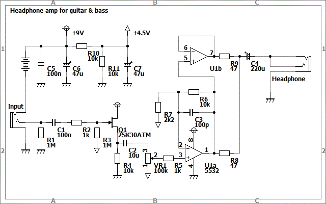
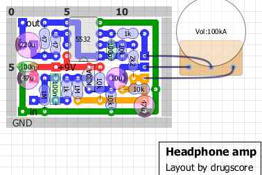

ヘッドフォンアンプその2
2012年08月02日 カテゴリー：ヘッドフォンアンプ・その他アンプ
以前作ったヘッドフォンアンプを今回はボリュームをつけて作り直しました。VOXのamPlugを使っていたんですが、電源が単4乾電池2本だからなのかすぐ歪むような気がします。あとベース練習には特性がフラットな方がいいかなぁと思ったのもあります。
回路図、レイアウトは下図です。


電解コンデンサが100u→47uに変更されていますが、手持ちの分を使っただけです。大して変わっていないので特に書くことがありません…